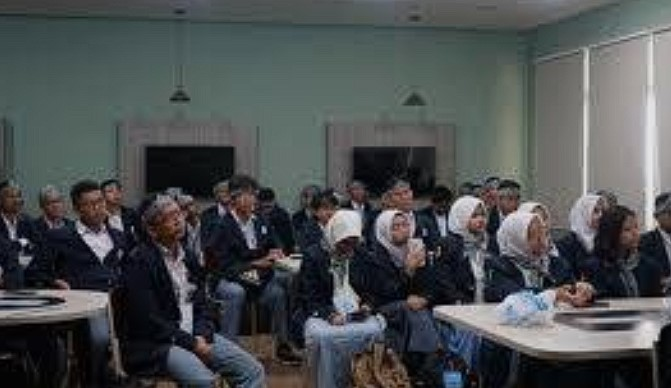

Prodi
- D3 Teknik Informatika
- D4 Teknik Informatika

Visi misi
- Menyelenggarakan pendidikan tinggi vokasi yang berkualitas untuk menghasilkan lulusan yang kompeten, berkarakter, berjiwa wirausaha, berwawasan lingkungan, dan siap bersaing secara global.
- Mengembangkan kegiatan penelitian berbasis produk dan jasa di bidang Informatika yang bermanfaat bagi masyarakat dan industri.
- Meningkatkan pengabdian kepada masyarakat melalui pemanfaatan teknologi informasi yang relevan dan berdampak nyata
- Memperkuat jejaring dan kerja sama strategis dengan dunia usaha, dunia industri, dan pemerintah dalam pengembangan pendidikan dan teknologi informasi
- Mewujudkan tata kelola organisasi yang profesional, akuntabel, dan berorientasi pada perbaikan berkelanjutan
Alur pendaftaran
- SNBP
- UTBK
- MANDIRI
Kontak
Punya pertanyaan lebih lanjut? Jangan ragu untuk menghubungi kami.
Kirim email